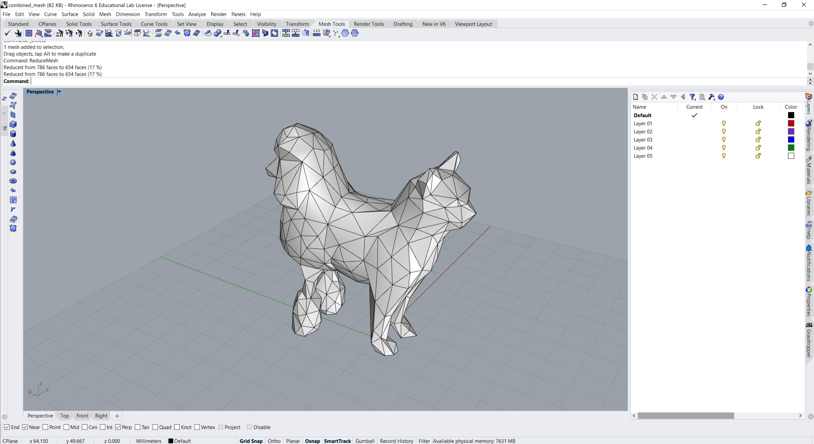

Meshes and Lamps!
Part I: Meshiness
I decided to make a catdog! I found low-poly cat and dog meshes on Thingiverse and imported them into Rhino. First, I cut each mesh in half with a plane:
I put the two meshes cut-side together and ran boolean union to join them. Then, I used a couple different mesh repair tools to move some vertices and faces around to smooth out the seam. I also reduced the mesh resolution further, making it even more low-poly. I could have spent a lot more time on this but I did not want to. All of the files I used are here. Here is the final combined catdog:
Part II: Planning the Lamp
For my lamp project, I knew I wanted to make something out of paper that was simple but elegant. I have a dark spot in my room that I would like to fill with light, and a pendant lamp would fit nicely there. I also have an extra Philips Hue bulb so I can make my lamp turn colors. In order to get some ideas, I started looking around Pinterest at paper lamps. I saw a lot of things that I liked, but many of them would require more time or resources than I am willing to devote to this project. The Pinterest board I made is here. Eventually, I came across a tutorial on youtube where someone makes a lamp out of some strips of paper and paper cups. I figured I could expand on this idea and create a parametric grasshopper definition for the parts that hold the paper. To start, I CADed a first guess at what I wanted and printed it, making sure the hole was large enough to fit over the lamp plug. (Files here).
I cut strips of paper out of 8.5x11 inch cardstock to glue to the 3D-printed part.
This first try was far too large for the paper strips I have. Unless I deal with diagonals (which I will not), that limits me to 11-inch strips of paper. That doesn't make for a very large lamp when wrapped around the base part this big. For the final lamp, I've ordered some larger cardstock. The other issue with my first attempt was having too many stIrips that were too close together. I found that the spacing needs to be just right in order to allow the strips to naturally form a sphere without crowding up at the crossing points. With this in mind, I made another iteration with a smaller diameter and fewer spaces for paper strips:
I am planning on experimenting with adding some cutout designs to the paper strips. I have a vinyl cutter which should be able to easily handle that. However, it might look better if kept simple. For next week, I ordered some larger cardstock so I can make the lamp a bit bigger to fit the bulb I have. I have a small bulb as a backup in case the paper doesn't arrive in time. I also need to figure out a good way to stabilize the bulb inside the lamp, but I have an idea for this and I'm not very worried about it. It involves three "prongs" coming off the inside of the top 3d printed piece that will essentially hold the bulb base in tension with three points of contact. This should make it easy to remove the bulb in the future. One other thing I would like to experiment with is the addition of some form of light-diffusing material (probably a thinner paper) around the bulb in order to soften the points of light that peek through the wrapped exterior.